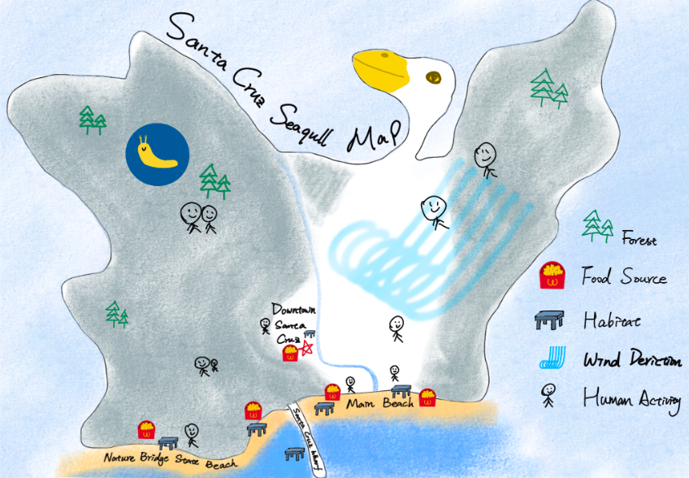
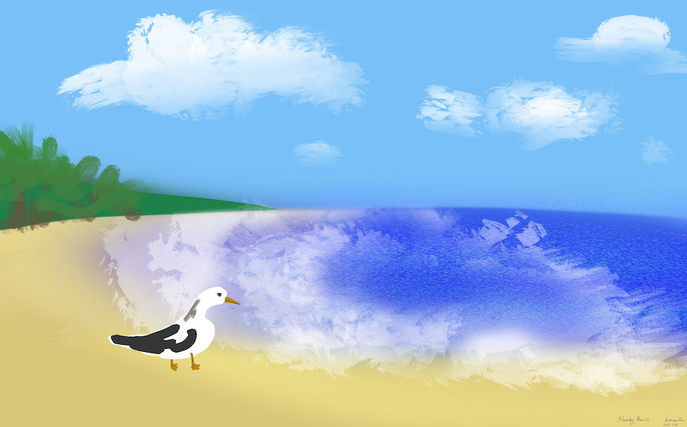
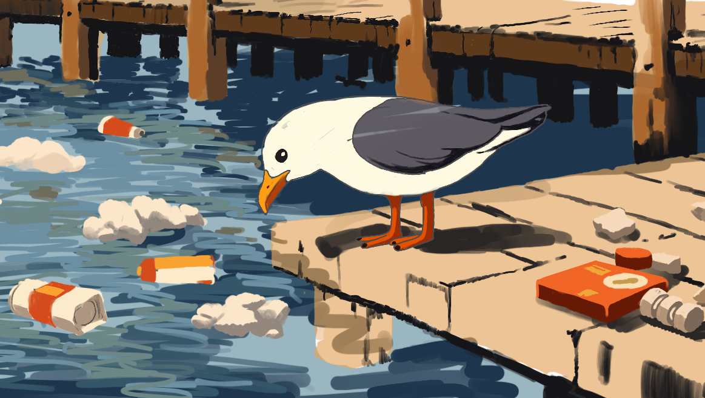
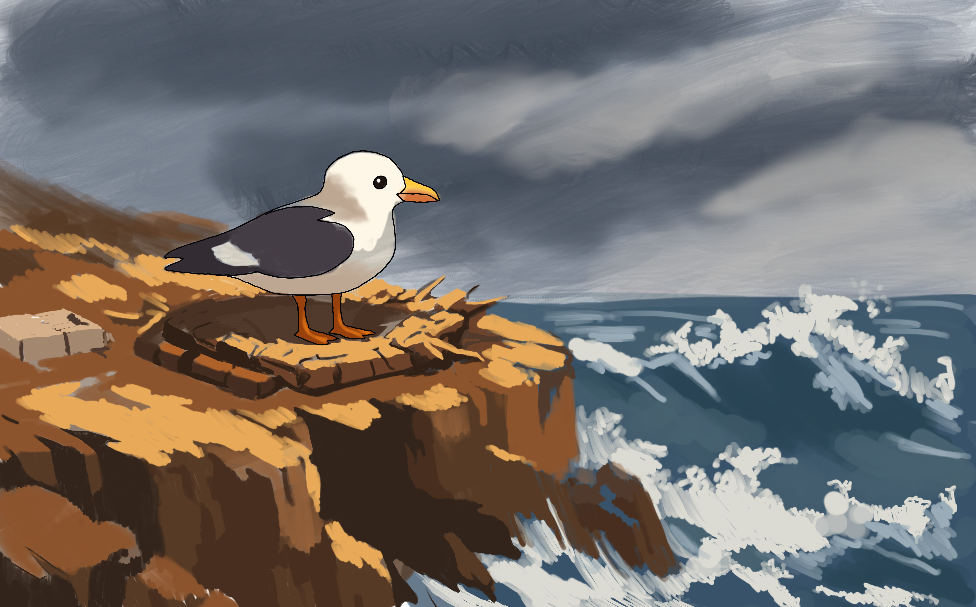
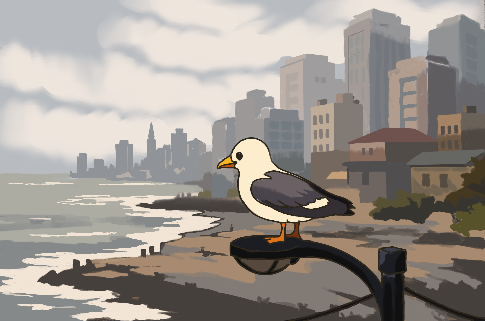

The sand is warm under my feet, and the tide moves in the steady rhythm I have always known. Schools of fish shimmer in the shallows while the wind lifts easily beneath my wings. Humans wander along the shore near the boardwalk, and scraps of food collect where land meets water.
The ocean stretches outward without end, and the seasons follow a pattern that seems stable and predictable. Life here feels abundant. The cliffs, the beach, and the water have always seemed like reliable places to rest, feed, and return to again.

Two years later, the water around Santa Cruz Wharf feels different. It is warmer than I remember, and I have to circle farther before finding fish worth diving for. More humans gather on the wooden planks above, and food scraps still fall into the water, but now pieces of plastic drift slowly between the pilings with the tide.
Storms arrive at unusual times of year, and the water seems to climb higher along the shore. With fewer fish available, many birds now compete for leftovers instead of hunting naturally. The ocean still feeds us, but the changing seasons make the coast feel less certain than it once did.

Five years later, the wind along the coastal cliffs feels harsher than before. It pushes against my wings and rattles the nest I tried to build near the edge. Below me, waves crash against the rocks again and again, slowly carving the land away through erosion.
Each year the storms grow stronger. They shake the cliffside and pull pieces of rock into the sea. Standing here, I wonder if this place can still serve as a safe nesting habitat, or if it is time to leave and search elsewhere.

After leaving the cliffs, I follow the land inland until the buildings of Downtown Santa Cruz rise higher than the trees. The streets trap warmth between concrete and glass, and the wind moves strangely here, bouncing between buildings instead of flowing freely across the coast.
The shoreline I once knew is harder to recognize. Some places where I used to nest have disappeared beneath rising water, while others have been replaced by roads and structures. To survive here, birds like me must adapt, searching for food on rooftops, parking lots, and trash bins rather than along the shore.